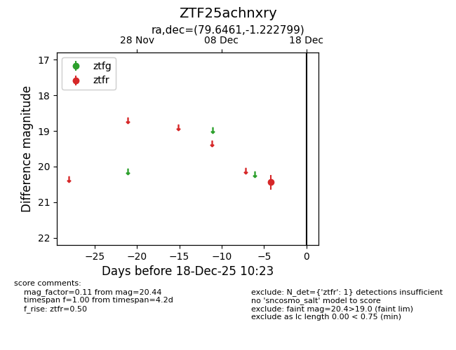
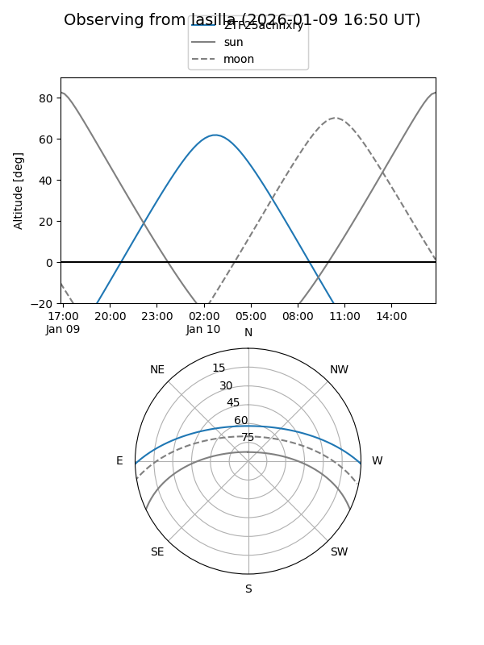
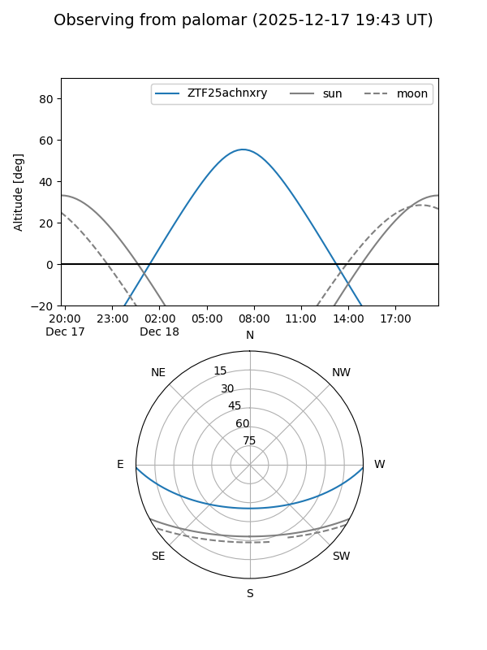

ZTF25achnxry
Target ZTF25achnxry at 2025-12-18 11:18
Aliases and brokers:
FINK: fink-portal.org/ZTF25achnxry
Lasair: lasair-ztf.lsst.ac.uk/objects/ZTF25achnxry
ALeRCE: alerce.online/object/ZTF25achnxry
alt names
ZTF25achnxry (ztf,fink_ztf)
Coordinates:
equatorial (ra, dec) = 79.6461,-1.22280
equatorial (HMS+DMS) = 05:18:35.07,-01:13:22.08
galactic (l, b) = (203.0118,-21.12755)
Photometry
last ztfr=20.44
1 ztfr detections
Lightcurve

Visibility


Additional plots